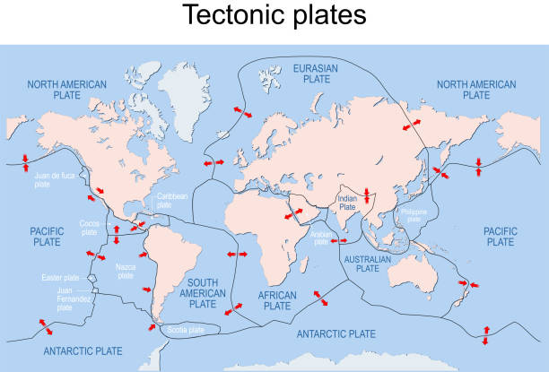
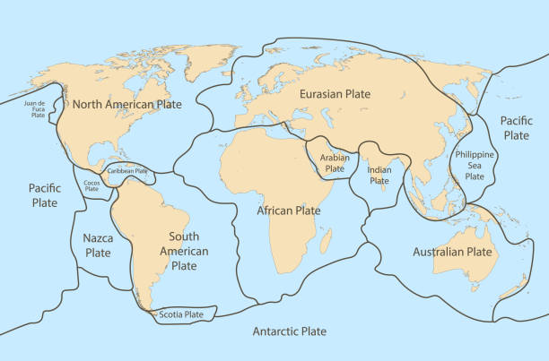

| Plate Name |
Description |
Inches moved per year |
| North American Plate |
The North American Plate is a massive tectonic plate covering North America, parts of the Atlantic Ocean, and Greenland. It moves westward at about 1 inch per year. |
1 inch |
| African Plate |
Encompassing Africa, it moves at 2.5 cm per year, influencing the East African Rift and the formation of the Rift Valley. |
0.85 inches |
| Antarctic Plate" |
Dominating the Antarctic region, it moves southward, impacting the Earth's climate and contributing to glacial activity. |
0.4 inches |
| Eurasian Plate" |
Covering Europe and Asia, it moves at a rapid pace, influencing continental collisions, mountain-building, and seismic activity. |
3.25 inches |
| Indo-Australian Plate |
Encompassing the Indian Ocean to Australia, it moves northward, impacting the Himalayas' formation and contributing to earthquakes. |
2.2 inches |
| Pacific Plate |
Spanning the Pacific Ocean, it moves northwest, causing the iconic Ring of Fire with intense volcanic and seismic activity. |
2 inches |
| South American Plate |
Covering South America, it moves westward, impacting the Andes mountain range and contributing to earthquake activity. |
1.3 inches |
| Scotia Plate |
Situated in the Southern Ocean, it moves between the South American and Antarctic Plates, impacting oceanic circulation patterns. |
0.87 inches |
| Nazca Plate |
Along the Pacific Ocean, it moves eastward beneath the South American Plate, causing subduction and forming the Andes. |
3.11024 inches |
| Cocos Plate |
In the eastern Pacific, it subducts beneath the North American Plate, contributing to volcanic activity in Central America. |
3.07087 inches |
| Caribbean Plate |
Covering the Caribbean Sea, it moves eastward, impacting the formation of volcanic islands in the region. |
0.87 inches |
| Juan de Fuca Plate |
Off the western U.S., it subducts beneath the North American Plate, influencing the Cascade Range's volcanic activity. |
1.6 inches |
| Amurian Plate |
In East Asia, it moves northeast, impacting seismic activity and the complex tectonic interactions in the region. |
0.393701 inches |
| Arabian Plate |
Covering the Arabian Peninsula, it moves northward, impacting the formation of the Zagros Mountains and seismic activity. |
0.590551 inches |
| Burma plate |
In Southeast Asia, it moves northward, contributing to the complex tectonic interactions and seismic activity in the region. |
1.81102 inches |
| Caroline Plate |
In the western Pacific, it subducts beneath the Philippine Sea Plate, influencing volcanic arcs and seismic activity. |
3.4252 inches |
| Okhotsk plate |
Near Russia, it moves northwest, impacting the tectonic interactions in the region and contributing to seismic activity. |
0.551181 inches |
| Philippine Sea Plate |
Surrounding the Philippines, it subducts beneath various plates, influencing volcanic arcs and trench systems. |
1.88976 inches |
| Somali Plate |
Covering the Horn of Africa, it moves eastward, impacting the East African Rift and contributing to geological processes. |
0.23622 inches |
| Sunda plate |
in Southeast Asia, it moves northward, influencing the complex tectonic interactions and seismic activity in the region. |
0.551181 inches |
| Yangtze Plate |
In East Asia, it moves northward, contributing to the complex tectonic interactions and seismic activity in the region. |
0.590551 inches |

